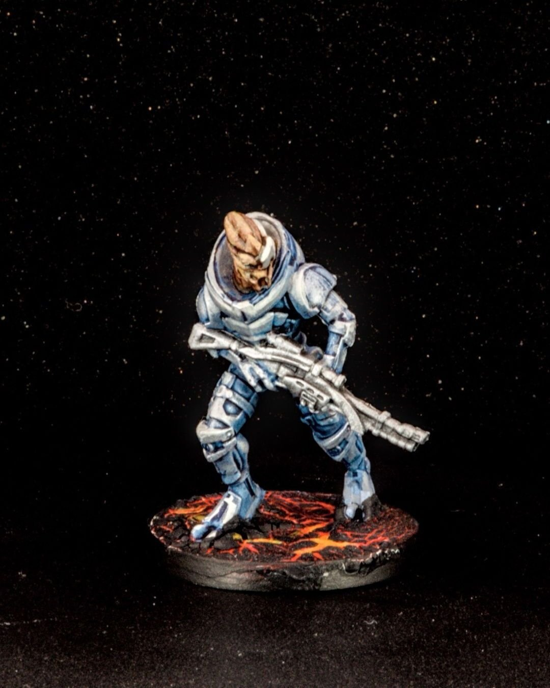
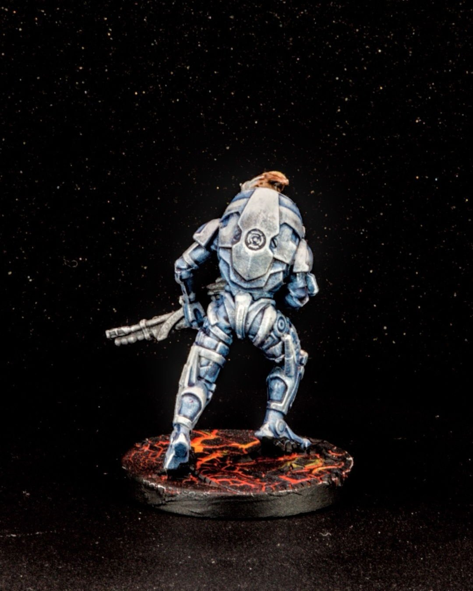
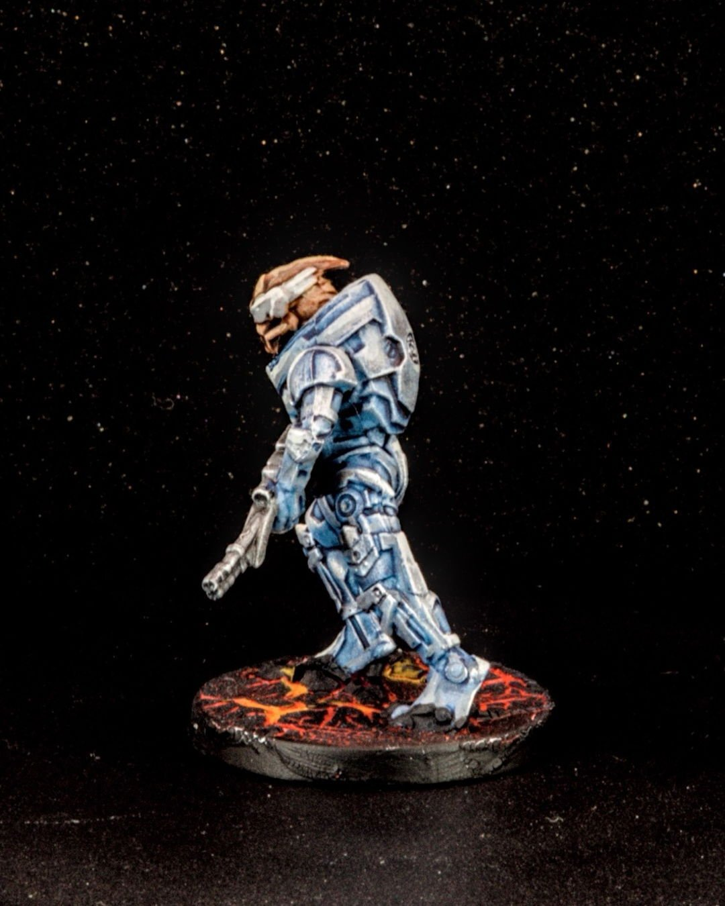
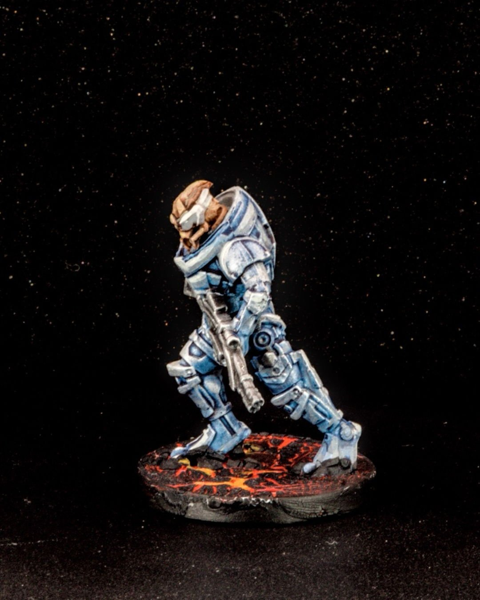
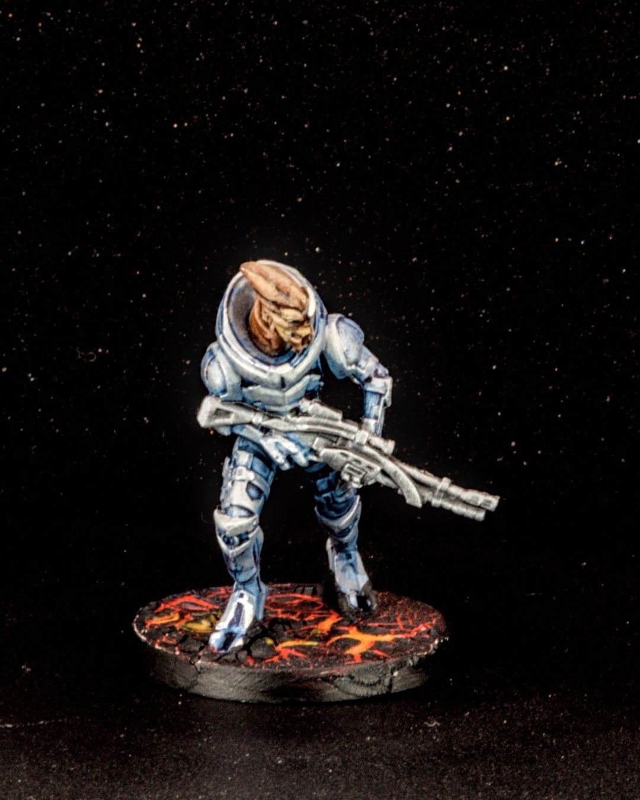

Garrus Vakarian
Garrus Vakarian never really left the battlefield, even when the galaxy needed saving between missions. There’s always something very steady about him, calibrated rifle, visor down, watching the horizon for trouble before it arrives.
For this one, I leaned into cool blues and desaturated metals to keep the armor grounded and military, then warmed things back up with the base so he didn’t disappear into the void. Lots of drybrushed highlights on the hard edges, a bit of grime to keep him honest, and restraint overall (Garrus feels like a character where less flash actually says more). A great sculpt from Modiphus, and a fun reminder of why Mass Effect characters still hit so hard years later. 🔭💥
@thearmypainter @modiphus
#MiniaturePainting #MassEffect #GarrusVakarian #SciFiMiniatures #TabletopGames